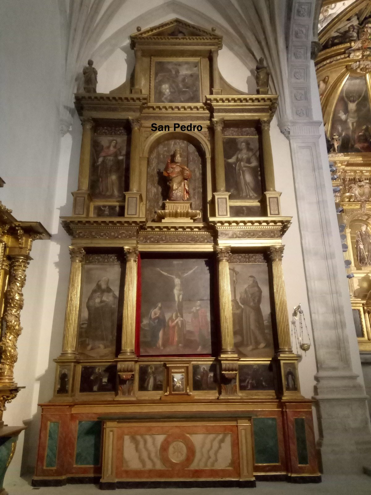
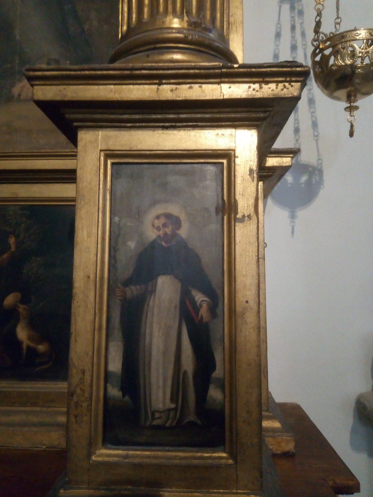

Retablo de San Pedro

A la izquierda del retablo mayor se encuentra este retablo colateral, el más antiguo de los grandes retablos del templo. Lo costeó la familia Pantoja a comienzos del siglo XVII, y una inscripción en el banco cuenta su historia: lo mandó hacer Diego Pantoja de Ramos, lo acabó su nieto Alonso Pantoja Correa y se terminó en 1629. Con el tiempo ha recibido algunas reformas e imágenes posteriores.
Estructura
Es obra de madera tallada, dorada y en parte policromada. Tiene un banco o predela, dos cuerpos con tres calles separadas por columnas corintias, y un ático rematado por un frontón triangular entre aletones.
Imágenes
- En el nicho central del cuerpo superior, una talla policromada de San Pedro con los atributos papales.
- A sus lados, pinturas de Santa Lucía y Santa Catalina de Alejandría.
- En el cuerpo inferior, a los lados, San Antonio Abad y un santo franciscano. En el centro, una pintura del Calvario, colocada aquí recientemente: no pertenecía al retablo.
- En el ático, San Jorge venciendo al dragón, imagen de la lucha del bien contra el mal.
El banco
En el banco se suceden pequeñas pinturas de santos. Sobre las dos centrales corre la inscripción que recuerda a los Pantoja y la fecha de 1629.


